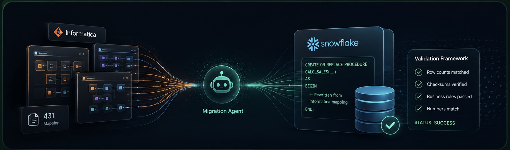
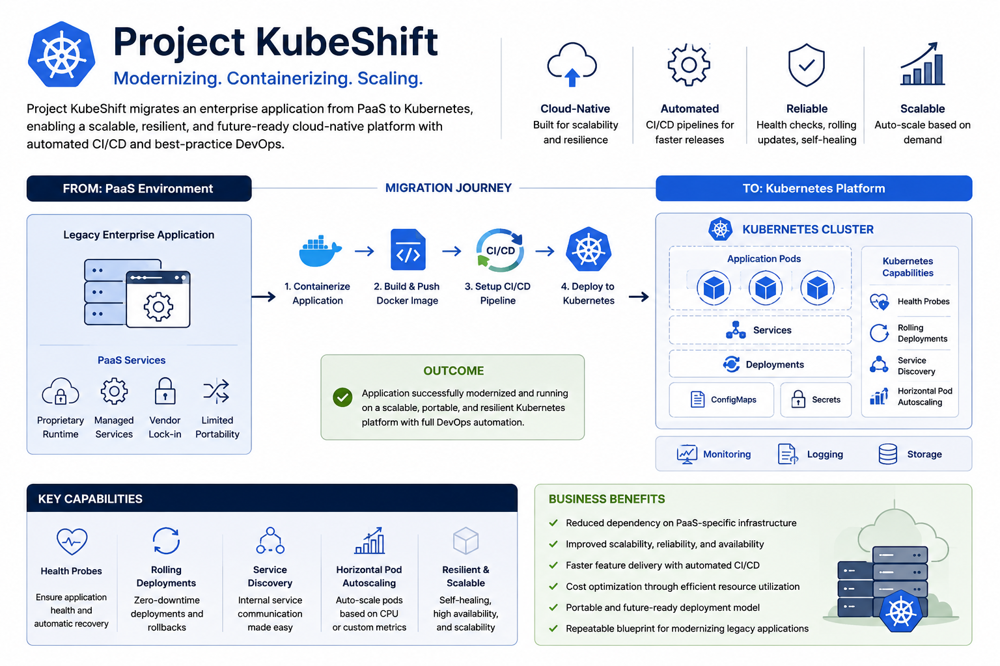

Data systems
that make sense.
From migration and data quality to modern pipelines, warehouses, dashboards and analytics.
We turn fragmented data, manual work, and ambitious ideas into AI solutions and digital products your business can rely on.
Start a conversation ↗01 — 03
Built for businesses
ready to move forward
THE KOVIFT DIFFERENCE
Kovift is a focused team of data, AI, product and infrastructure specialists. We partner with businesses globally—from first workshop to reliable production systems.
START WITH YOUR PRIORITY
THREE WAYS WE HELP
Bring scattered information together and turn it into a reliable foundation for decisions and growth.
Explore data systems ↗ 02Put practical AI to work in the workflows where your people lose the most time.
Explore AI solutions ↗ 03Launch a customer product, internal platform or new digital experience with confidence.
Explore product engineering ↗WHAT WE DO
01 / 03
From migration and data quality to modern pipelines, warehouses, dashboards and analytics.
Practical AI automation, agents, internal copilots, intelligent search and workflow integrations.
High-performing websites, web applications, mobile apps, SaaS products and MVPs.
SELECTED WORK
REAL DELIVERY EXPERIENCE

Oracle and Informatica estate modernised to Snowflake—cutting annual run cost by 50%.
Read full case study ↗
A PaaS application modernised into a resilient Kubernetes delivery model.
Read full case study ↗We’re preparing further verified case studies for public release.
Client identity is withheld where confidentiality requires it. Each story reflects real work delivered by our team.
HOW WE WORK
We get close to your goals, users, systems and constraints.
We define the right roadmap, architecture and measurable outcomes.
We build, test and launch with clear communication at every step.
We keep improving what matters as your business moves forward.
WHY KOVIFT
We begin with the outcome you need, then design the data, AI and product work around it.
Strategy, build, infrastructure and improvement work together—without hand-offs between disconnected teams.
Practical roadmaps, direct access to specialists and regular progress updates at every stage.
THE PEOPLE BEHIND IT
GLOBAL BY DEFAULT
Data & AI Expert
AI & DevOps Expert
Data & Product Development Expert
LET’S BUILD WHAT’S NEXT